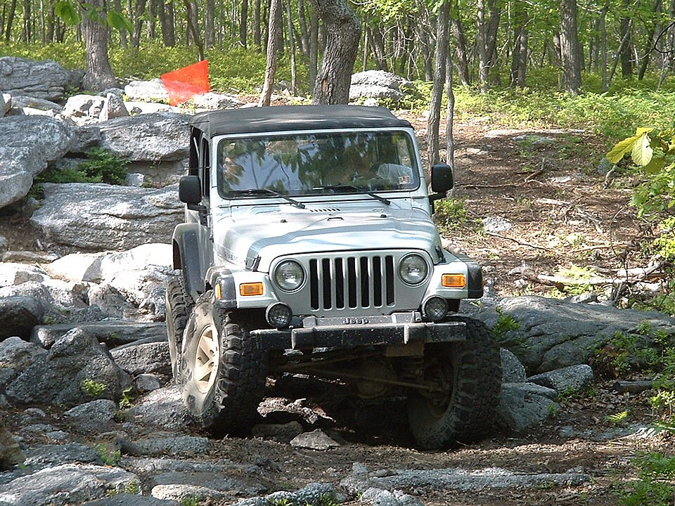

📑 Contents
Vehicle Recovery
Getting bogged in the outback is not a matter of if — it is a matter of when. Bulldust holes, dry creek crossings, beach sand, and rain-slicked claypans all swallow 4WDs without warning. The difference between a five-minute recovery and a multi-day ordeal is knowing when to apply force, when to dig, and when to stop before you break something.
1. Assessment
Before touching any gear, assess how bogged you are and what you have to work with.
How Bogged Are You?
| Situation | What It Looks Like | Risk Level |
|---|---|---|
| Wheels spinning | Tyres spinning freely, vehicle not moving. Chassis is above ground. | Low |
| Wheels dug in | Wheels have dug holes beneath themselves (axle-deep). Chassis still above ground. | Moderate |
| Chassis on ground | Vehicle is resting on the diff, chassis rail, or underbody panels. Wheels may barely contact ground. | High |
| Bellied out | Vehicle is fully resting on its belly — all four wheels are off the ground or barely touching. | Severe — professional recovery or serious effort needed |
Inventory Your Gear
| Gear | What to Check |
|---|---|
| Snatch strap | Is it rated? Is it 9 m+ long? No fraying or UV damage? |
| Shackles | Rated bow shackles (not Bunnings hardware D-shackles)? Rated for the strap's breaking strength? |
| Winch | Does it work? Is the rope/cable in good condition? Is there power in the battery? |
| Recovery boards | Maxtrax or similar? Unbroken? Cleats clean? |
| Shovel | Single long-handle or compact? One per person helps. |
| Jack | Does it work on sand (requires a base plate)? |
| Tyre deflator | Can you air down? |
When to Stop Trying
Stop and reassess if:
- Engine temperature rising — sand recovery at low range generates extreme heat. Watch the temp gauge like a hawk.
- Battery draining — winching drains batteries fast. If the engine is not running to charge, you have limited attempts.
- Wheels digging deeper — Each attempt should move the vehicle up, not down. If you are sinking deeper, stop.
- Clutch or transmission smell — Burning clutch or hot transmission fluid means you are cooking driveline components.
- Gear is failing — If a strap or shackle is showing wear, stop. Do not push gear past its limits in remote areas.
2. Basic Recovery (No Special Gear)
 Airing down tyres is the single most effective thing you can do for sand recovery. Image: Wikimedia Commons (CC BY-SA).
Airing down tyres is the single most effective thing you can do for sand recovery. Image: Wikimedia Commons (CC BY-SA).
You can recover from most shallow bogs with nothing but the gear already in the vehicle and some bush ingenuity.
Let Air Out of Tyres
This is the single most effective thing you can do.
| Surface | Target Pressure |
|---|---|
| Soft sand | 15–18 PSI (12–15 PSI for deep beach sand) |
| Bulldust / dry mud | 18–20 PSI |
| Wet clay | 20–22 PSI |
| Rocky terrain | 22–25 PSI |
Warning: Below 15 PSI, tyre beads can unseat from the rim when turning sharply. If the bead pops off, you will need a bead-seater (or a recovery compressor with a bead-blaster) to fix it. Carry a tyre repair kit with bead-lubricant.
After airing down, attempt a gentle drive-out in low range. Often this is all that is needed.
Rocking Technique
- Select low range, 2nd gear (automatic) or 2nd gear low (manual)
- Turn off traction control if fitted (most modern 4WDs allow this)
- Gently accelerate forward until wheels start to slip — not full throttle
- As the vehicle stops moving forward, immediately shift to reverse and gently reverse
- Repeat: forward, back, forward, back — building momentum in each direction
- On a forward rock, accelerate smoothly and try to drive out
Do not floor it. Full throttle just digs holes faster. Gentle, rhythmic rocking is more effective than brute force.
Digging
- Clear sand, mud, or soil from in front of all four wheels — not just the drive wheels
- Dig a gentle ramp from the base of each wheel pit sloping upward and forward
- Clear the underbody if the chassis is on the ground — dig a channel under the diff and chassis rails
- Smooth the ramp — rough ramps cause the tyre to catch and dig again
- Re-attempt with aired-down tyres
A proper dig-out takes 15–45 minutes. Rotate who digs to avoid heat exhaustion.
Improvised Traction
When wheels are spinning on slick ground, any friction material helps:
| Material | Effectiveness | Notes |
|---|---|---|
| Floor mats | Good | Slide under drive wheels. Rubber mats work best. Carpet mats disintegrate. |
| Spinifex grass | Excellent | Bundles of spinifex woven together create a tough mat. Replace when crushed. |
| Branches / saplings | Good | Lay perpendicular to wheel direction. Tie into bundles with seatbelt webbing. |
| Canvas / hessian | Moderate | Old swag canvas or hessian bags under wheels. Better than nothing. |
| Clothing | Poor — last resort | Jeans, jackets. Only use for a single attempt. |
| Climbing rope / webbing | Good — if you carry it | Lay in loops under the drive wheels. |
Technique: Pack the material securely under the wheel, ensuring it extends beyond the contact patch. Aim the material in the direction you want the wheel to roll. Drive gently — if you spin the wheels, you will eject the material.
Jack and Pack
For deeper bogs where wheels have dug axle-deep holes:
- Place a flat base under the jack (floor mat, piece of wood, shovel blade)
- Jack up one wheel at a time
- Pack the hole beneath the wheel with rocks, branches, packed sand, or any solid material
- Lower the wheel onto the packed material
- Repeat for all four wheels
- Drive out gently in low range
Safety: Never get under a vehicle supported only by a scissor or bottle jack. If the jack tips, you are crushed.
3. Snatch Strap Recovery
 Snatch strap recovery — kinetic energy stretches the nylon webbing and transfers momentum to the stuck vehicle. Image: Wikimedia Commons (CC BY-SA).
Snatch strap recovery — kinetic energy stretches the nylon webbing and transfers momentum to the stuck vehicle. Image: Wikimedia Commons (CC BY-SA).
A snatch strap uses kinetic energy — it stretches under tension and snaps back, transferring momentum to the stuck vehicle. It is the most common recovery method for a second vehicle to pull out a bogged 4WD.
Gear Requirements
| Item | Requirement | What Not to Use |
|---|---|---|
| Snatch strap | Rated nylon webbing, minimum 9 m length, rated for 2–3× the vehicle weight | Tow ropes (no stretch — they snap without transferring energy). Static recovery straps. |
| Shackles | Rated bow shackles (screw-pin), rated for at least the strap's breaking strength | Bunnings D-shackles (not load-rated). Hardware-store carabiners. |
| Recovery points | OEM or aftermarket rated recovery points fitted to chassis | Never use the tow ball. It becomes a projectile when it fails. Never use tie-down points, suspension arms, or the bullbar as recovery points. |
Recovery Points — Critical Safety
The tow ball must never be used for vehicle recovery. Tow balls are designed for towing trailers, not for snatch or winch recovery. When a recovery load is applied to a tow ball, it can snap off at the neck and become a steel projectile travelling at lethal speed. There are documented cases of tow ball failures killing and maiming people.
Safe recovery points: - OEM recovery points (front and rear) — usually marked with a red or orange tag - Aftermarket rated recovery points bolted to the chassis - Hayman Reece style tow hitch receiver (with a rated recovery hitch, not a ball mount) - Rated recovery hooks on aftermarket bullbars
Unsafe recovery points: - Tow ball (detachable or fixed — both can fail catastrophically) - Tie-down points (rated for transport, not recovery) - Suspension arms and control arms - Bullbar (unless it has rated recovery points) - Axle housings - Steering components
Technique
- Both vehicles in low range — the recovery vehicle should be in low range 2nd gear (manual) or low range 2nd (auto)
- Recovery vehicle positioned — 20 m away from the stuck vehicle on firm ground. Drive past slightly so the pull is straight, not at an angle
- Agree on signals FIRST — both drivers agree on hand signals or UHF channel before starting. If UHF, agree on a dedicated channel. If neither is available, a single horn blast means STOP IMMEDIATELY. The person at the recovery vehicle must be able to see the stuck vehicle or communicate clearly at all times
- Attach strap — shackle through strap loops and recovery points. Ensure the pin is screwed in to the last thread, but back the pin off half a turn so it doesn't bind under load
- Drape a dampener — a blanket, jacket, towel, or recovery damper over the centre of the strap. The strap becomes a whip if it breaks
- Stuck vehicle: in gear, engine running — engine running, in low range 2nd gear (manual) or Drive (auto) with foot firmly on brake until the strap is tensioned. Never leave the stuck vehicle in neutral — it can roll backward when freed, running over the recovery driver
- Tension the strap — recovery vehicle drives forward slowly until the strap is just tight. The stuck vehicle holds the brake during this step
- Recovery vehicle: gentle momentum — once the strap is tight, the recovery vehicle accelerates gently to walking pace. The strap does the work, not speed. No more than a brisk walking pace (5–8 km/h)
- Stuck vehicle: release brake, gentle throttle — as the recovery vehicle pulls, the stuck vehicle releases the brake and applies gentle throttle in the direction of pull. Both vehicles working together is safe and effective — the stuck vehicle should NOT accelerate hard, but a gentle throttle input prevents wheelspin when the wheels start rolling
- Pull through — the recovery vehicle continues driving for 10–15 m past the stuck vehicle's position, pulling it out in one smooth motion
- STOP check — once free, both vehicles stop. Check the strap, shackles, and recovery points for damage before packing up
If the First Attempt Fails
- The strap may need to be repositioned — it should be straight, not rubbing against chassis or sharp edges
- Dig the stuck vehicle's wheels clear first, then try again
- Reposition the recovery vehicle on firmer ground
- Try a double-pull: recover in stages, clearing the track as you go
Dampener — Why It Matters
A snatch strap under tension stores extreme kinetic energy. If the strap or a shackle breaks, the components whip backward at lethal velocity. A dampener (recovery blanket, heavy towel, folded jacket) draped over the centre of the strap absorbs this energy and stops the strap from becoming a projectile.
Without a dampener: A broken snatch strap can kill a person standing 30 m away. Never skip this step.
4. Winch Recovery

Winch recovery — self-recovery using an electric or hand winch when no second vehicle is available. Image: Wikimedia Commons (CC BY-SA).When there is no second vehicle, or when the bog is too deep for a snatch strap, the winch is your self-recovery option.
Electric vs Hand Winch
| Type | Pros | Cons |
|---|---|---|
| Electric winch | Fast, powerful, requires minimal effort | Drains battery, heavy, expensive, can overheat |
| Hand winch (Tirfor / come-along) | Works without vehicle battery, reliable, portable | Slow, physically demanding, limited to 1–2 tonnes |
| High-lift jack used as winch | Multi-purpose tool | Extremely slow, dangerous in inexperienced hands, limited range |
Single Line Pull
Calculate the effective pulling power of your winch:
- Winch rating × line layer reduction: Winches are rated at the first layer of cable on the drum. Each additional layer reduces pulling power by 10–15%.
- Example: A 4,500 kg winch with two layers of cable on the drum pulls approximately 3,800 kg — marginal for a 3-tonne vehicle in deep sand.
If the winch is marginal, use a double line pull.
Double Line Pull (with Snatch Block)
A snatch block (pulley) doubles the winch's pulling force and halves the cable speed — giving you more power and more control.
Setup: 1. Attach the snatch block to the anchor point with a rated shackle 2. Run the winch cable from the drum, through the snatch block, and back to your vehicle's recovery point 3. The cable now forms a loop: vehicle → anchor → back to vehicle
Force calculation: A 4,500 kg winch on double line pull delivers approximately 7,500 kg of effective pulling force (accounting for line layer reduction and friction in the snatch block).
Note: A snatch block also changes the direction of pull. Use this to pull yourself at an angle out of a rut or away from an obstacle.
Anchor Points
When winching, you need something solid to pull toward.
| Anchor | How to Use | Notes |
|---|---|---|
| Tree | Use a tree trunk protector (wide nylon sling) around the trunk. Never run the winch cable directly around the tree — it damages the tree and frays the cable. | Choose a tree at least 30 cm diameter. Avoid dead trees — they can snap. |
| Spare tyre (deadman anchor) | Bury your spare tyre vertically in sand, at least 3 m from the vehicle. Dig a trench 1 m deep (or as deep as you can). Place the tyre upright in the trench, run the winch cable or strap through the centre of the rim, and bury the tyre completely. Pack the sand firmly. | Add a second tyre (or rim) on top for more weight. For extra holding power, place a long branch or shovel handle through the rim before burying. |
| Another vehicle | Park the recovery vehicle 30 m+ from the bogged vehicle, chock its wheels, and use it as the anchor. | The recovery vehicle must be on firm ground. Always chock the wheels. |
| Rock | Wrap a tree trunk protector around a large boulder or rock outcrop. | Works only if the rock is larger than a fridge and firmly embedded. |
| Sand anchor | Commercial sand anchors (like Pull-Pal) use a flat plate with teeth that digs in as tension increases. | Expensive but highly effective for beach and desert recoveries. |
Winching in Sand
Sand is the most difficult surface for winching because anchors pull out easily.
Deadman anchor technique (detailed): 1. Dig a trench approximately 5–7 m from the stuck vehicle, at least 1 m deep and 1.5 m long 2. Place the spare tyre (or two) in the trench, standing upright 3. Pass the winch cable through the centre of the rim and attach it back to itself with a shackle 4. Bury the tyre completely, packing sand firmly as you go 5. Walk over the buried area to compact the sand 6. Attach a tree trunk protector or short strap to the cable where it exits the sand — this prevents the cable from cutting through the sand 7. Winch slowly and steadily — jerking may pull the anchor out
If the anchor pulls out: - Dig the trench deeper and wider - Add more weight: rocks, branches, the second spare tyre, your recovery gear bag - Pack the sand more firmly — wet sand is better than dry sand. Pour any available water over the buried anchor area
Winch Safety
| Rule | Why |
|---|---|
| No one near the cable under tension | A broken cable whips back with lethal force. The danger zone extends 1.5× the cable length from the vehicle. |
| Drape a dampener on the cable | A recovery blanket, heavy jacket, or folded floor mat over the centre of the cable span. It absorbs energy if the cable snaps. |
| Never step over the cable | If the cable snaps while you are stepping over it, it can sever your leg at the knee. Walk around — never over. |
| Never handle the cable with bare hands | Wire rope forms sharp burrs and broken strands that cut deeply. Winch gloves or heavy leather gloves always. |
| Use gloves when guiding cable | Keep hands at least 30 cm from the fairlead when feeding cable in or out. |
| Never bend the cable sharply | Sharp bends create kinks that permanently weaken the cable. Use the snatch block for direction changes. |
| Keep winching sessions short | Continuous winching overheats the winch motor. Winch for 30 seconds, pause for 60 seconds to cool. |
| Engine running during winching | The winch draws huge current. Run the engine at fast idle (1,500–2,000 rpm) to keep the alternator charging. |
| Pause and check | Every 3 m of winching, pause and check the cable, the anchor, and the vehicle's position. |
Cable and Rope Care
- Synthetic rope: Keep clean. Mud and sand between the fibres act as abrasives when the rope flexes.
- Wire cable: Inspect for broken strands — the cable must be replaced if you find three broken strands in one lay length. Use protective sleeves at contact points.
- Fairlead: Check for burs and sharp edges. Synthetic ropes need a roller fairlead or aluminium hawse fairlead.
- Storage: Keep cable/rope clean and dry. UV degrades synthetic rope — store it out of direct sun when not in use.
5. Jack Recovery
Exhaust Jack (Air Jack)
An exhaust jack is an inflatable bag that lifts the vehicle using exhaust gas pressure. Essential for sand and mud recovery where a conventional jack is useless.
How to use: 1. Attach the hose to the vehicle's exhaust pipe (engine running) 2. Place the deflated bag under a solid chassis or axle point 3. Let the exhaust pressure inflate the bag — the vehicle rises 4. Once lifted, pack material (sand, rocks, branches) under the wheels 5. Deflate the bag and drive out
Advantages: - Works on ANY surface (sand, mud, snow — conventional jacks sink) - Lifts the entire side or end of the vehicle in one go - Can lift from an axle or chassis rail even when deeply bogged
Limitations: - Requires engine running (exhaust pressure) - The exhaust connection can pop off — secure with a clamp if available - Generates significant load on exhaust system seals — check for leaks after use - Bag can be punctured by sharp objects — clear the area beneath first
Hi-Lift Jack (Farm Jack)
A hi-lift jack is a long mechanical lever jack. It lifts, pulls, clamps, and spreads. Also called a farm jack or kangaroo jack. It is one of the most versatile but also most dangerous recovery tools.
Lifting: - Place the base plate on FIRM ground (use a jack base for sand/mud) - Engage the jack into a rated jacking point, bullbar tube, or rock slider - NEVER lift from a standard vehicle panel or bumper — it will bend - Keep your face and body AWAY from the handle arc — if the load slips, the handle can recoil with lethal force - After lifting, secure the vehicle with jack stands, blocks, or the recovery itself
Winching (using hi-lift as a hand winch): - Attach one end of a chain or strap to the vehicle, the other to an anchor point - Connect the hi-lift between them using rated shackles - Operate the jack handle to pull the vehicle towards the anchor - SLOW progress — a 1m winching stroke takes 10-15 handle cycles - This is emergency-only. An electric winch or hand winch (Tirfor) is far more efficient.
Clamping: - The hi-lift can be used as a clamp to press body panels back into shape, compress springs during removal, or hold objects together during repair
Hi-lift safety rules: - NEVER put any part of your body in the handle's arc - ALWAYS use jack stands if working under the vehicle - Spray the mechanism with WD-40 daily in dusty conditions — grit jams the pins - The jack CAN kick sideways if the vehicle is unstable — stand to the side, not behind or in front - NEVER use the hi-lift as the sole support when under the vehicle — it can release instantly
6. Maxtrax / Recovery Boards
 Recovery boards — the cleanest and safest way to self-recover from sand and mud bogs. Image: Wikimedia Commons (CC BY-SA).
Recovery boards — the cleanest and safest way to self-recover from sand and mud bogs. Image: Wikimedia Commons (CC BY-SA).
Recovery boards (Maxtrax, Tred, or similar) are the cleanest, safest way to self-recover from most sand and mud bogs.
How to Position
- Clear as much sand/mud from in front of the drive wheels as possible
- Insert the recovery boards under or directly in front of the drive wheels
- Angle the boards slightly upward (the leading edge should be 30–45° to the wheel contact point)
- Ensure the boards are fully seated against the wheel — not floating on loose sand
Driving Technique
- Select low range, 2nd gear (automatic) or 2nd gear low (manual)
- Turn traction control off if fitted
- Apply gentle throttle — the wheels should climb onto the boards smoothly
- If the wheels spin, you have lost traction on the boards — stop immediately
- Back up slightly, reposition the boards, and try again with less throttle
The golden rule of recovery boards: No wheel spin. The moment the wheels spin, you have lost the friction that makes the boards work. If you spin, stop, clean the cleats, and try again.
Cleaning After Use
Recovery boards work on friction between the tyre and the board's cleats. Mud, sand, or grease in the cleats makes them useless.
- Scrape cleats clean with a stick or the edge of a shovel
- Rinse with water if available
- Check for cracks — cracked boards can snap under load
- Stack boards together for storage (packed together, they don't bounce around in the vehicle)
Bush Alternatives
If you do not carry recovery boards, improvise:
| Material | How to Use | Durability |
|---|---|---|
| Spinifex bundles | Cut large bundles of spinifex. Weave them together into a mat about 1 m × 50 cm. Lay under the drive wheels. Replace when crushed. | One or two uses per bundle |
| Branches woven together | Lay saplings or thick branches parallel to each other. Lash them together with seatbelt webbing, electrical wire, or any cordage. Weave a lattice pattern for grip. | 2–5 uses |
| Canvas or tarp | Fold a heavy canvas tarp or swag canvas into a thick pad. Lay under the wheel. Canvas has good friction against rubber. | 1–3 uses (canvas tears) |
| Car floor mats | Stack two or three floor mats together. The rubber backing provides good grip on sand. | 3–5 uses |
| Old carpet | If you carry offcut carpet in the vehicle (not a bad idea for outback travel), it works similarly to recovery boards | 3–5 uses |
| Corrugated cardboard | Lay several layers under wheels. Works once, then disintegrates. Better than nothing. | Single use |
| Shovel blade | In extreme circumstances, lay the shovel flat under the wheel for one metre of travel. Pull it out after one rotation and relay. | Tedious but works |
7. When You're Properly Stuck
There is a point where continued effort turns a recoverable situation into a broken vehicle. Recognising this point is a skill that keeps you alive.
Signs You Are Properly Stuck
- Chassis is fully on the ground and you have been digging for 2+ hours with no movement
- The winch anchor keeps pulling out and you have no spare tyre
- The vehicle is high-centred on a rock or log — wheels are off the ground
- You have attempted three different methods and the vehicle has not moved
- A mechanical issue has occurred (clutch burning, gearbox noise, CV joint clicking)
- You are running low on fuel from recovery attempts
- You or your passengers are showing signs of heat stress
Stop Before You Break Something Expensive
| Component | Replacement Cost (remote) |
|---|---|
| CV joint | $300–$800 + towing to town |
| Clutch | $2,000–$4,000 + towing |
| Gearbox or transfer case | $3,000–$8,000 + towing |
| Diff (ring and pinion) | $1,500–$3,500 + towing |
| Winch motor (burned out) | $500–$1,500 |
| Tyre (bead torn from rim) | $300–$600 |
The total cost of a tow to the nearest town is almost always less than the cost of driveline repairs from an aggressive recovery attempt.
Wait for Help vs Walk Out
Use the decision framework from the Vehicle Breakdown page. Key factors specific to getting bogged:
- If you have communication (UHF, phone, PLB): Wait for help. You are not broken down — you are stuck. A station hand with a track vehicle can pull you out in an hour.
- If you have supplies for 3+ days: Wait. Someone who knows your route will come looking.
- If you have no communication and limited water: Re-read the vehicle breakdown page carefully. Walking is the last resort.
Using the Vehicle for Shade While Waiting
If you are stuck and waiting for help, the vehicle becomes your survival shelter:
- Create shade on the southern side of the vehicle — see Heat Survival
- Leave the vehicle in a visible position on the track — do not move it into scrub
- If recovery is not imminent, raise the bonnet (distress signal)
- Tie something visible to the radio aerial — a shirt, reflective material, flagging tape
Setting Up Signals
See Vehicle as Resource for detailed signaling instructions. Key actions while waiting:
- Prepare a tyre fire — remove the spare, make fuel and tinder ready
- Lay out ground signals — stomp SOS in red sand, arrange rocks
- Charge phone from vehicle battery (run engine briefly if fuel permits)
- Make UHF calls every 15 minutes on channel 40 (truckies) and channel 5 (emergency)
8. Post-Recovery Checklist
After the vehicle is free, do not just drive off. A full post-recovery check prevents a second breakdown 5 km down the track.
Tyres
- Re-inflate tyres to road pressure (typically 35–40 PSI for highway driving)
- Check bead — look for a gap between the tyre and rim (especially if aired below 15 PSI)
- Check for cuts, bulges, or sidewall damage (rocks and spinifex stubs can puncture tyres)
- Check valve stems — sand and mud can push a valve stem off-centre
Underbody
- Check for damage to the exhaust, fuel tank, and bash plates
- Look for bent or broken suspension components (control arms, shock absorbers)
- Check CV boots for tears (sand destroys CV joints within minutes if the boot is torn)
- Check the diff breathers — sand ingress kills diffs
- Check the brake lines — any rubbing or chafing
Radiator and Cooling
- Check the radiator for mud or sand blocking the fins — bulldust clogs radiators and causes overheating
- Hose out the radiator and intercooler fins if you have water
- Check the radiator fan for bent blades
- Check coolant level (top up if needed)
Driveline Check
- Listen for unusual noises from the driveline as you drive away slowly
- Drive 50 m in a straight line, then turn gently in both directions
- Listen for clicking (CV joint damage), whining (diff damage), or vibration (tailshaft damage)
- Stop, check for fluid leaks under the vehicle
Recovery Gear
| Item | Action |
|---|---|
| Snatch strap | Rinse with fresh water. Dry in shade. Check for fraying, abrasion, or UV damage. Repack clean. |
| Shackles | Rinse, dry, lubricate the threads with a drop of oil. Check for cracks or deformation. |
| Winch cable/rope | Spool out fully. Clean with fresh water. Inspect for damage. Re-spool neatly under tension. |
| Recovery boards | Scrub cleats clean. Check for cracks. Stack and stow. |
| Tree trunk protector | Rinse, dry, check for tears. |
| Snatch block | Rinse, dry, lubricate the pulley bearing. Check the cheek plates for deformation. |
| Shovel | Clean. Dry. Oil the blade edge. |
Never pack recovery gear dirty. Sand in the fibres of a snatch strap or winch rope acts as an abrasive that significantly reduces the gear's lifespan.
Check the Driver
This is the most important item on the checklist. Recovery is physically and mentally draining — especially in outback heat.
- Drink water — you may not have noticed how much you sweated during the recovery
- Eat something — even a muesli bar or biscuit
- Rest for 20–30 minutes before driving
- Reassess your plan: should you turn back? Is the track ahead riskier?
- Check passengers — anyone showing signs of heat exhaustion or dehydration?
Before Driving On
- Re-inflate tyres before hitting bitumen — driving on low pressure at speed destroys tyres
- Confirm you are pointed in the right direction
- Set your trip meter, note your GPS coordinates, and make a radio call if possible
- Tell someone your new location and ETA
Recovery Gear Quick Reference
| Gear | Minimum Recommendation | Bush Alternative |
|---|---|---|
| Snatch strap | 9 m × 8,000 kg rated nylon | Seatbelts lashed together (last resort only) |
| Shackles (×2) | 4.75 t rated bow shackles | — |
| Recovery points | OEM rated or aftermarket | Never the tow ball |
| Winch | 4,500 kg electric (12,000 lb) with synthetic rope | Hand winch (Tirfor) for non-electric vehicles |
| Snatch block | 4,500 kg rated snatch block | — |
| Tree trunk protector | 3 m × 75 mm nylon sling | Multiple seatbelts, tow rope doubled |
| Recovery boards | 2–4 boards | Spinifex bundles, woven branches |
| Tyre deflator | Digital with bleed valve | Valve core tool (watch for grit) |
| Compressor | 30 L/min minimum, with pressure gauge | — |
| Shovel | Long-handle, 1 per 2 people | — |
| Recovery blanket | Commercial recovery damper | Heavy coat, folded tarp, floor mats |
| Long-handle jack | Farm jack or high-lift | Bottle jack + base plate |
| Gloves | Heavy leather or winch gloves | Any thick gloves (not nitrile) |
| First aid kit | Comprehensive outback kit | See What to Carry |
Related Pages
- Vehicle Breakdown: Stay or Go? — Decision framework when recovery is not possible
- Vehicle as a Resource — Using the vehicle for survival while waiting for recovery
- Extreme Heat Survival — Managing heat during physical recovery work
- What to Carry — Full outback gear checklist including recovery equipment
- Emergency Services — Calling for recovery assistance
- Emergency Services — PLB activation and emergency contacts
- Vehicle as a Resource — Using your vehicle for survival